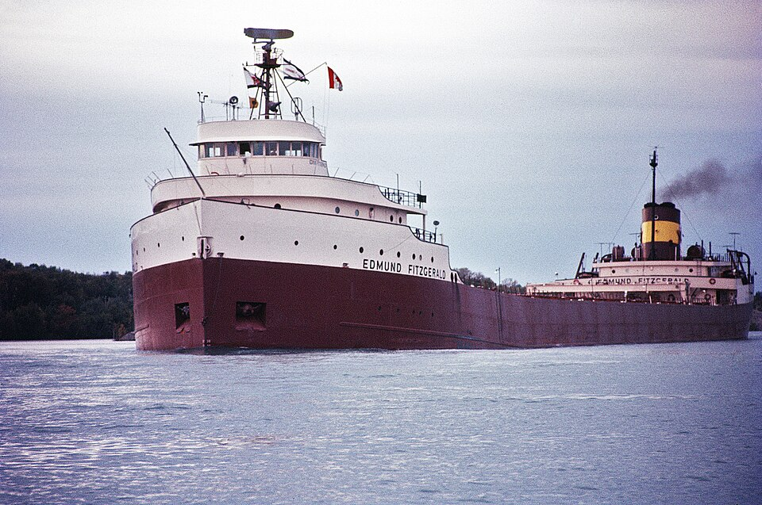

DOSSIER M17 // LAKE SUPERIOR // 1975
Edmund Fitzgerald: loss of a Great Lakes freighter
[ MARITIME & GEOGRAPHIC MYSTERIES // MODERN ]

.jpg){kind=link}
Event and chronology
The ore carrier Edmund Fitzgerald left Superior, Wisconsin, in November 1975 with a taconite cargo. During a severe storm on Lake Superior, the ship disappeared rapidly; the Coast Guard received a final radio exchange shortly before she sank, killing all 29 aboard. The wreck was located in two sections.
What later accounts allege
Conspiracy versions claim a hidden collision, cargo theft or deliberate cover-up; the sinking has also been attributed to an allegedly mysterious Great Lakes zone. Later debate about the exact physical failure is sometimes presented as proof that the official account is false.
Records, searches and conditions
The Coast Guard Marine Board reviewed radio traffic, weather, ship inspections and survivor-vessel testimony. The NTSB later analyzed wreck surveys and proposed that hatch covers and heavy seas led to flooding; other experts emphasize possible structural failure. NOAA mapping documents the wreck site.
Independent and contrary evidence
The ship encountered documented severe weather, and the recovered wreck is split on the lakebed. Competing engineering explanations remain grounded in physical observations; disagreement about the order of failure does not support collision or sabotage absent independent evidence.
What remains unknown
The exact initiating failure and final minutes remain disputed because no one survived and the ship was not recovered intact. The Coast Guard and NTSB used different evidence and reached differing technical interpretations, so certainty about a single mechanism would be misleading.
Assessment
The sinking is well documented as a storm-time maritime disaster; a paranormal or criminal cause is not established. New diagnostic wreck imaging or authenticated evidence of collision could change the failure assessment; a difference of expert opinion alone does not establish a cover-up.
Sources and limits
- U.S. Coast Guard — Edmund Fitzgerald Marine Board report (1977)Board reviews radio, weather and ship condition; it does not settle all structural questions.
- NTSB — Edmund Fitzgerald safety investigationTechnical review compares Coast Guard findings with wreck evidence; wreck was not recovered intact.
- NOAA Great Lakes Research — Lake Superior 1975 storm dataHistorical lake observations provide weather context but are spatially limited and cannot decide hull failure mechanism.